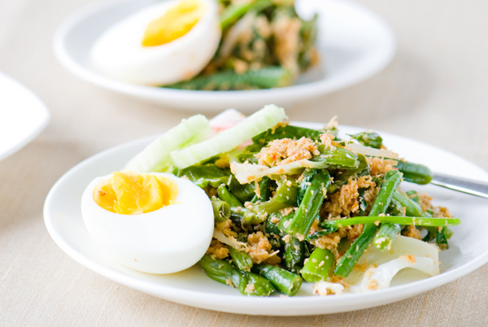
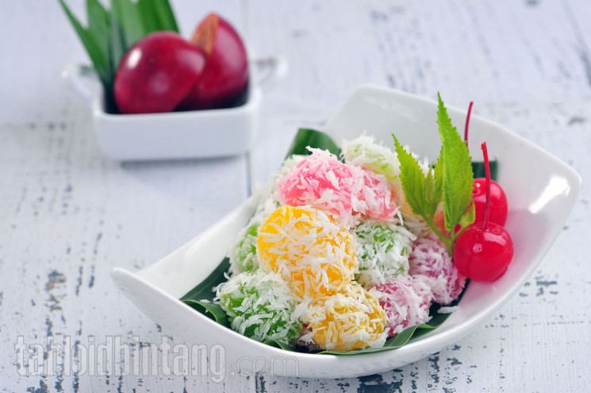
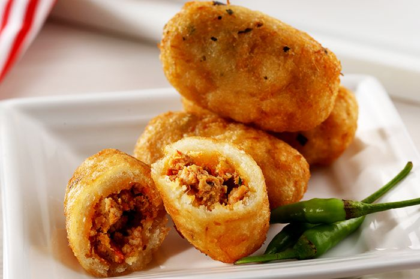
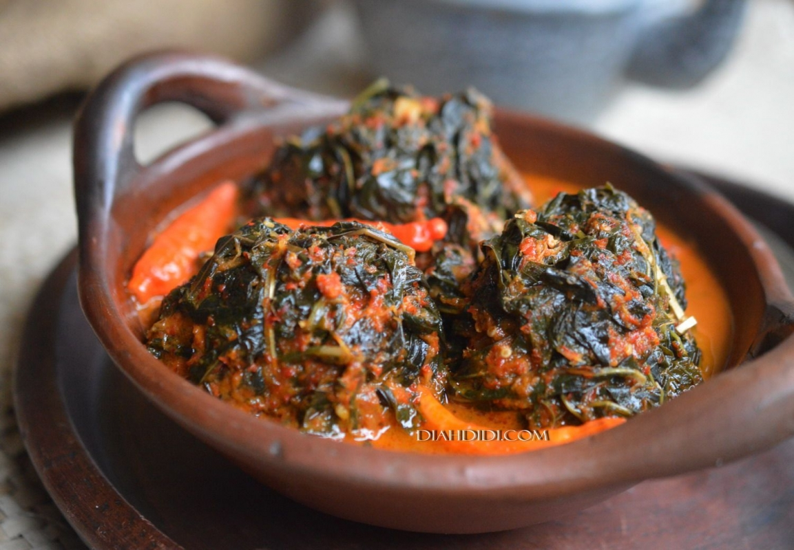

Mendoan, which is typical of Purwokerto, consists of soybeans that have been fermented into tempeh and mixed with a savory flour mixture.
To enjoy it, Mendoan Purwokerto is usually served with sweet and spicy soy sauce.
Soto Sokaraja
Various delicious ingredients such as beef broth with chopped peanuts on it make Soto Sokaraja different from other soto.
Usually, Soto Sokaraja is served with crackers and ketupat on top.
Getuk Goreng
The Getuk Goreng is made from grated cassava and is immediately seasoned with coconut sugar.
To get it, visitors can buy it as souvenirs along the streets of the Purwokerto area, especially on the Jalan Sudirman streets.

Kluban
Kluban is a typical food of Purwokerto which is quite similar to salad.
Usually, Kluban is served complete with spinach, bean sprouts, long beans, grated coconut, and chili seasoning.

Cenil
Cenil is presented beautifully with a variety of unique colors.
The ingredients are enough cassava, starch, pandan leaves, and grated coconut.

Combro
This Purwokerto specialty combro has a more oval shape than usual and contains grated cassava and oncom dough in the middle.

Buntil
Buntil consists of grated coconut mixed with various spices and anchovies.
After that, the dough is wrapped using papaya leaves or taro.
Buntil is more appropriate when served with spicy and savory sauce.